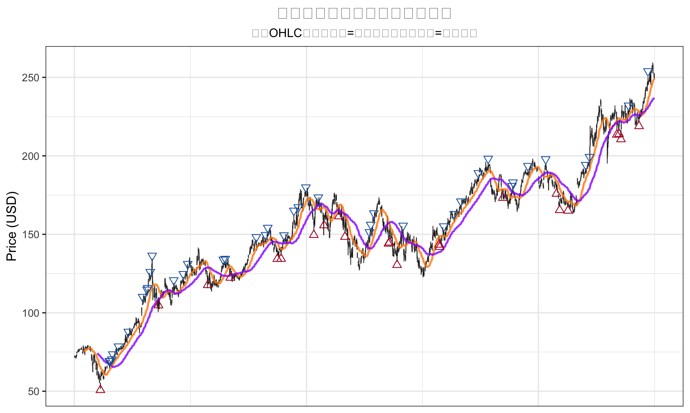
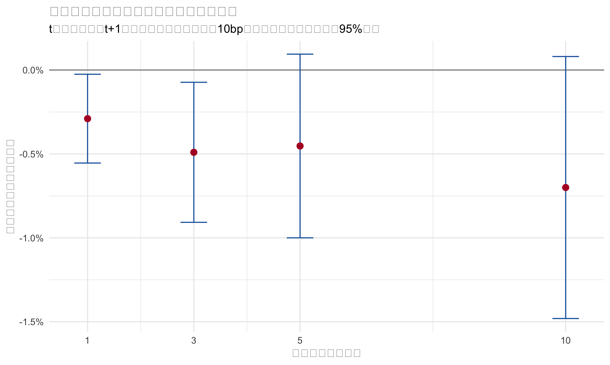

趋势、支撑阻力与极性转换
问题现场
锤子线只有在下跌后才符合经典语义，但“下跌后”可以用过去收益、均线、通道或峰谷结构定义。不同定义会筛出不同事件。若研究者在看完收益后选择最好的趋势算法，趋势过滤本身就成为数据窥探。
学习目标
- 用均线、通道和高低点结构定义趋势；
- 定义支撑、阻力、突破与假突破的可用时点；
- 解释极性转换为何必须使用历史水平；
- 将反转形态与趋势位置组合；
- 检验过滤前后样本与不确定性的变化。
经典形态与市场机制
上升趋势通常表现为更高的高点和更高的低点，下降趋势相反。支撑是历史上买方反复响应的价格区域，阻力是卖方响应区域；突破后，原阻力可能转为支撑，原支撑可能转为阻力，这被称为极性转换。蜡烛形态靠近这些区域时，经典解释更有上下文。
但水平不是无限精确的单一价格。波动变化、跳空和不同参与者成本会形成区域。用未来若干日价格确认“这确实是支撑”再回填到过去，会产生严重未来函数。
可计算定义
最小趋势定义使用20日简单均线：\(C_t>SMA_{20,t}\) 为上行环境，反之为下行。Donchian通道用过去 \(n\) 日高低：
\[ U_t=\max(H_{t-n},\ldots,H_{t-1}),\qquad D_t=\min(L_{t-n},\ldots,L_{t-1}). \]
关键是通道不包含当日，否则当日突破会抬高边界。看涨反转候选仅在 \(C_t<SMA_{20,t}\) 保留，看跌候选仅在 \(C_t>SMA_{20,t}\) 保留。该规则检验“逆原趋势反转”，不是趋势跟随。
研究设计
主信号由锤子、流星和吞没构成，再用20日均线过滤。对照组是第单根K线：压力、拒绝与失衡章的未过滤单根候选与第双根K线：吞没、孕线与反击章的双根候选。稳健性一：用 trend_detection_channel(n=20) 替代均线；稳健性二：使用50日均线；稳健性三：所有滚动边界滞后1日，确保当日价格不进入历史水平。
R实现
ohlc <- lab_xts()
trend_sma <- eCandleSticks::trend_detection_sma(ohlc, n = 20)
trend_channel <- eCandleSticks::trend_detection_channel(ohlc, n = 20)
raw_signal <- lab_merge_signals(
lab_base_signals()$hammer,
lab_base_signals()$shooting,
lab_base_signals()$engulfing
)
features <- lab_features()
signal_r <- ifelse(
(raw_signal > 0 & features$close < features$sma_20) |
(raw_signal < 0 & features$close > features$sma_20),
raw_signal, 0
)trend_detection_sma() 和 trend_detection_channel() 是 eCandleSticks 的趋势辅助接口；更丰富的通道可由 eTTR::add_donchian_channel() 生成。
Python实现
import numpy as np
from python.candlestick_lab import load_data, pattern_signal
panel = load_data()
sma_20 = panel["close"].rolling(20).mean()
raw = np.sign(
pattern_signal("hammer").to_numpy()
+ pattern_signal("shooting").to_numpy()
+ pattern_signal("engulfing").to_numpy()
)
signal_py = np.where(
((raw > 0) & (panel["close"] < sma_20))
| ((raw < 0) & (panel["close"] > sma_20)),
raw, 0
)若使用Python ettr.donchian()，应将边界整体滞后一期后再比较当日收盘，避免包含当日极值。
图形诊断

检查信号与均线的相对位置、均线斜率以及价格是否远离均线。仅用价格在均线上下区分趋势，可能把横盘噪声误作趋势；通道和斜率是必要的敏感性方案。
证据与稳健性
| sample | events | mean_gross | mean_net | win_rate | ci_low | ci_high |
|---|---|---|---|---|---|---|
| 全部事件 | 195 | -0.0035 | -0.0045 | 0.4000 | -0.0100 | 0.0009 |
| 非重叠事件 | 163 | -0.0037 | -0.0047 | 0.3988 | -0.0106 | 0.0012 |

过滤通常降低样本量。即使均值变化，也要比较区间而非只看点估计。将SMA20、SMA50和滞后Donchian作为预先规定的三种定义，若结论只在一个定义下成立，应称参数敏感而非稳健。
AI协作实验室
AI审计滚动窗口：列出每个指标在时点 \(t\) 读取的最晚数据，并生成“当日极值意外进入通道”的测试。约束是支撑阻力只能由 \(t\) 及以前数据生成，交易仍从 \(t+1\) 开始。验收通过人为制造当日新高，确认昨日通道不随当日变化。
失效条件与常见误区
- 用未来反弹确认支撑后回填历史标签；
- Donchian边界包含当日高低再判断突破；
- 看完结果后选择最优趋势窗口；
- 把水平当精确价格，不设置ATR容差；
- 过滤后样本变少却只比较平均收益。
本章小结与练习
趋势与水平赋予形态语义，也引入新的参数和未来函数风险。任何“确认”都必须说明当时可见的数据边界。
- 比较SMA20、SMA50和滞后Donchian三种过滤结果。
- 用ATR构造支撑区域而非单点，检验容差敏感性。
- 写一个测试证明通道突破规则不包含当日高点。
进入下一章前，请确认你能说出每个趋势变量的最晚可用时点，并能区分趋势过滤带来的均值变化与样本变化。